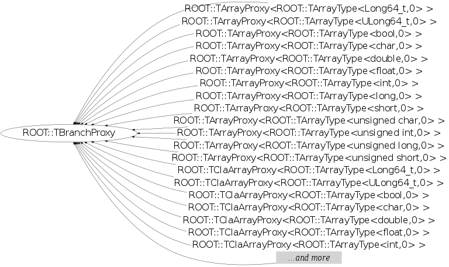

class ROOT::TBranchProxy
TBranchProxy Base class for all the proxy object. It includes the imeplemtation of the autoloading of branches as well as all the generic setup routine.
Function Members (Methods)
public:
| virtual | ~TBranchProxy() |
| TClass* | GetClass() |
| virtual void* | GetClaStart(UInt_t i = 0) |
| TVirtualCollectionProxy* | GetCollection() |
| Int_t | GetOffset() |
| ROOT::TBranchProxy* | GetProxy() |
| virtual void* | GetStart(UInt_t = 0) |
| virtual void* | GetStlStart(UInt_t i = 0) |
| void* | GetWhere() const |
| Bool_t | IsaPointer() const |
| Bool_t | IsInitialized() |
| virtual void | Print() |
| Bool_t | Read() |
| Bool_t | ReadEntries() |
| void | Reset() |
| Bool_t | Setup() |
| ROOT::TBranchProxy | TBranchProxy() |
| ROOT::TBranchProxy | TBranchProxy(const ROOT::TBranchProxy&) |
| ROOT::TBranchProxy | TBranchProxy(ROOT::TBranchProxyDirector* boss, const char* top, const char* name = 0) |
| ROOT::TBranchProxy | TBranchProxy(ROOT::TBranchProxyDirector* boss, const char* top, const char* name, const char* membername) |
| ROOT::TBranchProxy | TBranchProxy(ROOT::TBranchProxyDirector* boss, ROOT::TBranchProxy* parent, const char* membername, const char* top = 0, const char* name = 0) |
Data Members
protected:
| TBranch* | fBranch | branch to read |
| TBranch* | fBranchCount | eventual auxiliary branch (for example holding the size) |
| const TString | fBranchName | name of the branch to read |
| TClass* | fClass | class name of the object pointed to by the branch |
| TString | fClassName | class name of the object pointed to by the branch |
| TVirtualCollectionProxy* | fCollection | Handle to the collection containing the data chunk. |
| const TString | fDataMember | name of the (eventual) data member being proxied |
| ROOT::TBranchProxyDirector* | fDirector | contain pointer to TTree and entry to be read |
| TStreamerElement* | fElement | |
| Bool_t | fInitialized | |
| Bool_t | fIsClone | true if we proxy the inside of a TClonesArray |
| const Bool_t | fIsMember | true if we proxy an unsplit data member |
| Bool_t | fIsaPointer | true if we proxy a data member of pointer type |
| TTree* | fLastTree | TTree containing the last entry read |
| Int_t | fMemberOffset | |
| Int_t | fOffset | Offset inside the object |
| ROOT::TBranchProxy* | fParent | Proxy to a parent object |
| Long64_t | fRead | Last entry read |
| void* | fWhere | memory location of the data |
Class Charts
{kind=link}
{kind=link}
{kind=link}
{kind=link}

Function documentation
TBranchProxy(ROOT::TBranchProxyDirector* boss, const char* top, const char* name, const char* membername)
Constructor.
TBranchProxy(ROOT::TBranchProxyDirector* boss, ROOT::TBranchProxy* parent, const char* membername, const char* top = 0, const char* name = 0)
Constructor.
Bool_t IsaPointer() const
void * GetClaStart(UInt_t i = 0)
return the address of the start of the object being proxied. Assumes that Setup() has been called. Assumes the object containing this data member is held in TClonesArray.
void * GetStlStart(UInt_t i = 0)
return the address of the start of the object being proxied. Assumes that Setup() has been called. Assumes the object containing this data member is held in STL Collection.